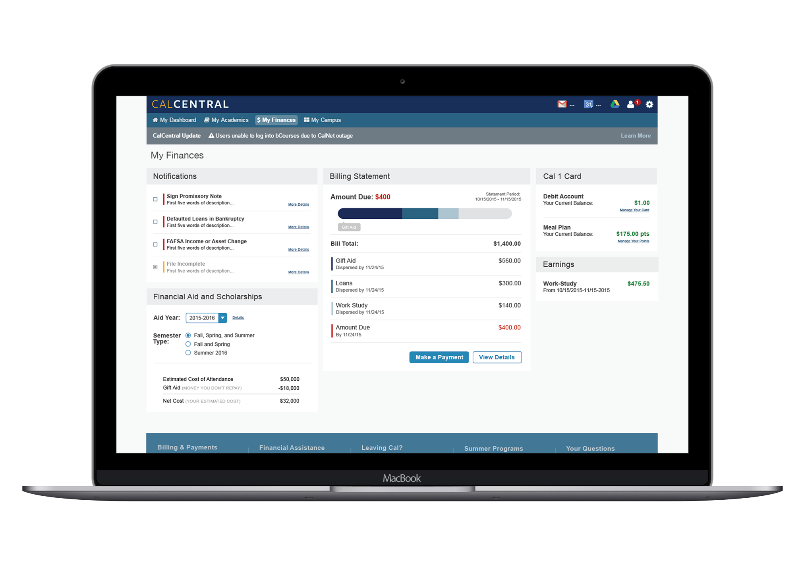
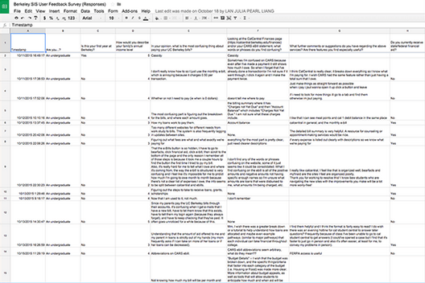
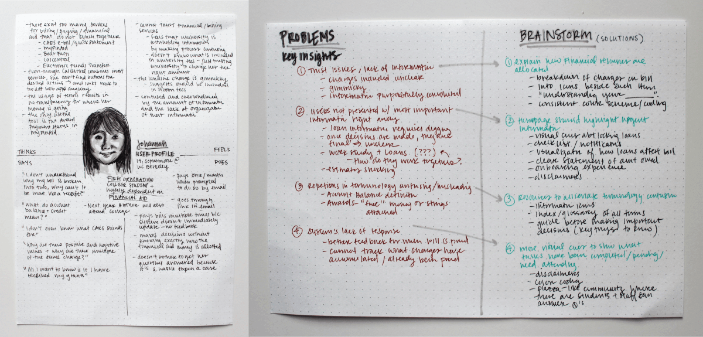
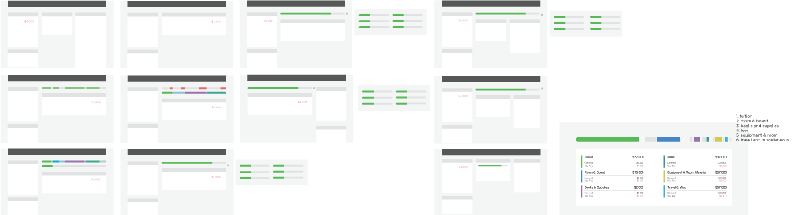

The Student Information Systems (SIS) Project is Berkeley’s initiative to replace the aging and disparate student systems. The SIS Project needed help merging billing and financial aid into a single, smooth student experience.
We began by studying the financial web applications of several other universities and explored their layouts of students' financial information.
We received 23 responses to an exploratory survey to better understand students' experiences with Cal's financial aid and billing systems.
We also conducted several in-depth user interviews by having students walk us through the process of paying their bill and understanding their financial aid.
Personas we created to reflect the students we interviewed
We used small multiples to help us design different layouts. We used a combination of user testing and our own discretion to narrow our selection of possible layouts.
Some notable design features include: